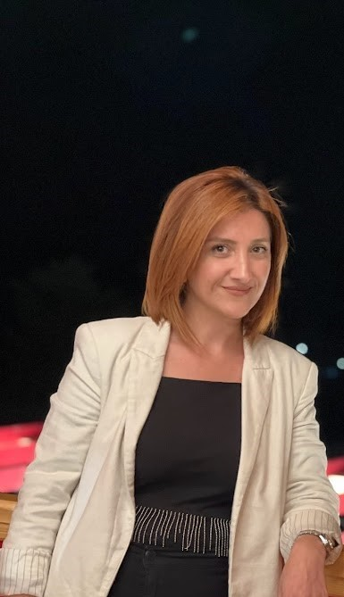

Hayarpi Tigranyan
Education
- Yerevan State University 2011-2013:
Master in International Law
- Yerevan State University 2007-2011: B.A. in International Relations with honor
- School N2 after Grigor Narekaci, Vagharshapat 1997-2007: Secondary and High Education
Languages
- Armenian:Native
- English:Upper-Intermediate
- Russian:Upper-Intermediate
- Turkish:Beginner